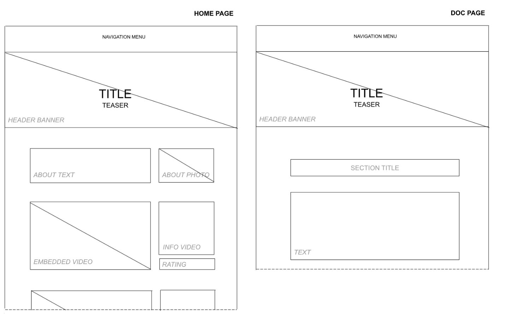
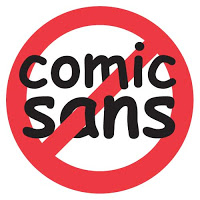

Abstract
La musica è emozione. Un concerto dal vivo rappresenta l'apice di questa espressione. Per un fan, partecipare attivamente a questo momento è un'esperienza unica e indescrivibile. L'obiettivo di questo sito web è raccogliere questi momenti, proponendo una serie di video catalogati per condividere e diffondere queste esperienze straordinarie, nel tentativo di trasmettere quelle emozioni. Il valore aggiunto consiste sia nella semplicità di utilizzo, che nella possibilità di catalogare il materiale. Inoltre, se opportunamente aggiornato, di mantenere un'alta dinamicità attraverso l'aggiornamento continuo dei contenuti.
Project Management Plan
1. Benchmarking
-
Obiettivo:
Il progetto nasce come prototipo di sito che raccoglie video di fan che partecipano attivamente ad uno show live, con obiettivo di diffondere e condividere questi momenti unici, non frequenti ed emozionanti, creando un collettore di questa tipologia di esperienza non convenzionale.
-
Target utente:
- Fascia over 30, di qualsiasi genere, orientamento sessuale e reddito.
-
Competitors:
Non esiste un competitor diretto, tuttavia esistono alcuni articoli di giornale online che raccolgono video di fan che partecipano attivamente ad un concerto, come quelli di Flypaper e Guitarworld. In questo caso, essendo articoli di giornale online, offrono un contenuto di tipo statico e non aggiornabile. Inoltre non prevedono alcun tipo di rating o catalogazione.
Un altro competitor può essere un canale Youtube dedicato, ma non ne è stato identificato alcuno, mentre son presenti nella piattaforma alcune playlist a riguardo, sparse e non strutturate. Rispetto ai competitor principali in questo caso è garantità la dinamicità di aggiornamento, il rating classico semplificato di YouTube (like) e la possibilità di interazione con i commenti.
2. Struttura e layout
-
Architettura del sito:
-
Wireframe: 
-
Look and Feel:
E' stato scelto un layout pulito e minimale, curando l'adattibilità a seconda dei device utilizzati, modificando o eliminando dinamicamente alcuni elementi per garantire una miglior lettura.
Sono stati utilizzati due font Google: il titolo è in stile "handwriting", scelta per riflettere l' "estrosità" del tema trattato. Questa font è stata trovata su un sito di font-pairing, a cui era abbinata una font simile a quella scelta come font principale (Rubik). Questa è stata scelta rispetto a quella suggerita per pure ragioni di gusto personale, senza stravolgere la soluzione proposta. Nonostante sia di tipo "sans-serif" (come quella suggerita), è stata volutamente confermata in quanto la tipologia di sito non prevede paragrafi lunghi.
Per i colori invece è stato preferito un sito bianco e nero (con tonalità di grigio), in quanto i video embedded portano già un contributo forte a riguardo. E' stato introdotto un verde leggero in quache background e bordatura, variando opacità a seconda dell'esigenza, nel tentativo di creare uno stile identificativo. La tonalità è stata scelta tra quelle proposte inserendo il nero e le tonalità di grigio già presenti nel sito in uno strumento online di Adobe per l'abbinamento dei colori.
3. Linguaggi e strumenti
-
Linguaggi web utilizzati: HTML5, CSS3, javascrtipt.
-
Strumenti tecnologici a supporto della progettazione:
- Bootstrap,
- GitHub, Bootstrap,
- Visual Studio Code,
- Validation tools for structured data (Schema Markup Testing Tool | Google Search Central),
- Lyket (per il servizio di rating, attualmente sospeso poichè superate le visualizzazioni gratuite).
-
Nella pagina Credits è possibile trovare tutti i riferimenti agli elementi utilizzati nel sito.
Communication Strategy
1. Background
In base a quanto emerso nell'analisi sui competitors, si decide in primo luogo che verrà effettuata una catalogazione dei contenuti, che si potrà estendere all'introduzione di tag specifici e una sezione per cercare i contenuti eventualmente con dei filtri specifici. Viene data la possibilità di rating del contenuto, in modo da poter creare delle classifiche in base ai video più apprezzati, o, eventualmente, di distribuire nella pagina i contenuti in base alla preferenza, in modo da dare più visibilità ai video più graditi. Rispetto alle soluzioni esistenti, si punta sulla dinamicità e aggiornamento continuo dei contenuti, puntando sempre su un'interfaccia di utilizzo molto semplice ed intuitiva.
2. Obiettivi comunicativi
E' stata usata una famosa frase ad effetto di Warhol apertura, opportunamente orientata al target primario prefissato, che dimostra come ora ("nel futuro"), ognuno possa diventare famoso per un breve periodo soprattutto grazie alla capillarità e potenza del web. Nel nostro caso più specifico inoltre ricorda anche direttamente come il fan sul palco stia vivendo il suo piccolo momento di celebrità.
Vedere queste situazioni inusuali, dove la star offre un'opportunità irripetibile ad un fan, è a mio parere molto emozionante e il mio intento è di diffondere questa emozione ed offrire nello stesso tempo un piccolo momento di leggerezza.
Considerando l'obiettivo, si vuole quindi tentare di offrire all'utente un break, che sia coinvolgente, ma allo stesso tempo spensierato. Si può puntare in termini comunicativi per la promozione su parole e concetti come "emozione", "relax", "un giorno da vip", oltre naturalmente alla già citata frase d'apertura.
In termini quantitativi si vogliono raggiungere almeno i 100 utenti (visite uniche).
3. Target audience e messaggio
Il target è ampio e diversificato: chiunque navighi online può amare la musica. Questa vasta varietà di utenti potenziali rende il sito altamente competitivo. Nonostante questo, il target scelto si concentra sulla fascia over 30, in quanto i più giovani prediligono strumenti più competitivi per queste tipologie di raccolte, con formati molto brevi, più veloci e di rapida fruizione.
Il sito si rivolge ad utenti di qualsiasi genere, orientamento sessuale e reddito. La fascia d'età scelta risponde bene ai contenuti video ed è solita utilizzare piattaforme come Facebook e Youtube, dove si può concentrare la promozione, oltre ad una eventuale produzione grafica dedicata.
Al fine di ampliare esponenzialmente la platea dei potenziali utenti, si è scelta come lingua principale l'inglese. Nonostante ciò, il sito rimane molto intuitivo e fruibile anche da chi non conosce la lingua, in quanto i contenuti sono video e le parti di testo minimali. Oltre gli utenti casuali, gli utenti secondari vengono identificati come gli over 50, che troveranno comunque un sito di semplice navigazione (praticamente single-page), chiaro e con contenuti di facile fruizione (scoll-play-stop-rate).
4. Promozione
In base al target primario identificato, si preferisce concentrare la promozione sui social Facebook e Youtube. Nel primo caso è stato creato un post di promozione, mentre nel secondo caso si potrebbe creare un canale direttamente collegato al sito. Il sito inoltre è stato pubblicizzato attraverso gruppi whatsApp formati da persone mie coetanee.
Sul sito stesso, nella sezione del footer, è presente la possibilità di condividere il sito sui principali social, al fine di incentivare la promozione da parte degli stessi utilizzatori.
Per migliorare l'indicizzazione sui motori di ricerca è stato prodotto un set completo di metadata nella sezione head, sono stati creati i files robot.txt e sitemap.xml e aggiunti i gli attributi per i microdati per ogni evento visualizzato, secondo lo schema https://schema.org/MusicEvent.
5. Valutazione dei risultati
A livello quantitativo l'obiettivo è stato raggiunto in quanto al XX settembre si sono registrati X accessi univoci, come da screenshot.
Non è possibile verificare la tipologia e altre caratteristiche degli utenti in quanto l'accesso non avviene tramite autenticazione: i dati raccolti sono puramente quelli di provenienza e navigazione.
